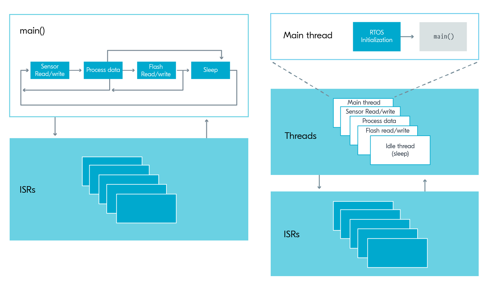

Zephyr: Timers, Threads, Work Queues & Events
BME554L - Fall 2025
Dr. Mark Palmeri, M.D., Ph.D.
Duke University
August 25, 2025
What are the challenges with sleep / delay statements?
- Overall timing of the main loop hard to estimate with multiple ”tasks”.
- Adding / removing features can disrupt all of the timing.
What are the challenges with super-loops?
- Nested conditional statements testing for timing of events can make the code difficult to read and maintain.
- Leads to “code spaghetti” and “spaghetti timing”.
Threads
System vs. User Threads
- Zephyr’s kernel starts a system thread and a user-space thread by default.
- User can add tasks to the system thread and/or create user threads.
Thread Priority

Timer Threads
In addition to ISR priority and thread priority yielding, the system also has timers for high temporal accuracy tasks (one-time or repeated).
- Timers are managed by the kernel (system).
- Timers are always available (i.e., no need to include libraries or enable kernel configurations)
- Like ISR callback functions, timer handler functions should not consume significant resources / take much time to execute.
- A handler function at the end of a timer interval (duration / period) must be defined.
- A handler function at the end of a timer stop can optionally be defined.
- The kernel gives timing events relatively high priority.
Pseudo-Code
Defining the Timer and Associated Handler Functions
/* Declare timer start[/stop] handler functions */
void timer_interval_expiry_handler(struct k_timer *name_of_timer);
void timer_stop_handler(struct k_timer *name_of_timer); // optional
K_TIMER_DEFINE(name_of_timer, timer_interval_expiry_handler, timer_stop_handler);
// if the timer will run indefinitely or doesn't need an explicit action upon stopping
// K_TIMER_DEFINE(name_of_timer, func_to_exec_on_timer_start, NULL);
/* Define the timer handler functions */
void timer_interval_expiry_handler(struct k_timer *name_of_timer)
{
gpio_pin_toggle_dt(&somepin);
// in future assignments, could also post an event here
}Handler Functions Should Not Test for State
void timer_interval_expiry_handler(struct k_timer *name_of_timer)
{
if (state == AWAKE) {
gpio_pin_toggle_dt(&somepin);
} else (state == SLEEP) {
gpio_pin_set_dt(&somepin, 0);
}
}- Instead, use a different timer/handler function for each state:
- Stop one timer in an exit transition state.
- Start the other in an entry transition state.
Starting a Repeating Timer
k_timer_start(&name_of_timer, K_MSEC(DURATION_OF_FIRST_INTERVAL), K_MSEC(DURATION_OF_REPEATED_INTERVALS));K_MSECis a macro that converts a time, specified in ms (DURATION_OF_FIRST_EVENT) to whatever time unit the function requires.- Other useful macros include
K_SECONDS,K_MINUTES,K_HOURS, etc. - Timer functions are executed at the end of each interval (duration / period).
- https://docs.zephyrproject.org/latest/kernel/services/timing/clocks.html
Stopping a Timer
This will call timer_stop_handler() that you associated with the timer using the K_TIMER_DEFINE macro.
Timer Example
- This timer toggles the LED state every 500 ms.
- Note that the timer handler is executed at the end of each timer interval.
- The stop handler function turns off the LED.
Starting a One-Shot Timer
If you want to do something once for a specified duration (one-shot behavior).
One-Shot Timer Example
- In the example below, you can use the one-shot timer to toggle the LED state after 1 second. Note that the LED is turned on seaprate from the timer and the timer handler is executed at the end of the timer interval to turn it off.

- There is no need to stop the timer; it terminates after the specified interval.
Restarting Timers
- You do not need to stop a timer that is already running to reset the timing interval.
- Just execute
k_timer_start()again. - Note that the timer will not be set to the new interval until it completes the interval it currently is ”in”.
Notes
Warning
If you set a duration / period to 0, the timer will:
- Execute as fast as possible, and
- Stop without running the optionally associated stop function!
- The specified duration / period are the minimum times between executions of the timer function.
- Other blocking code may cause the timer function to execute later than the specified duration / period.
Work Queues
What is a Work Queue?
- A work queue is a way to execute a function when the system is not busy.
- Work queues are managed by the kernel (system).
- System work queue exists by default (no need to include libraries or enable kernel options).
- User can create additional work queues, but need to be defined and initialized.
How Work Queues Help Us
- Callbacks and handler functions associated with ISRs and timers should not consume significant resource / take much time to execute.
- Pro: Work queues allow us to execute functions that may take longer to execute.
- Con: The specific timing of the execution of the function is not guaranteed.
- No longer need to test for Boolean variables in the main loop to determine when to execute a function.
Pseudo-Code
/* declare work queue handler function */
void blink_timer_work_handler(struct k_work *timer_work);
/* define a work queue to associate with the handler function */
K_WORK_DEFINE(blink_timer_work, blink_timer_work_handler);
/* in your timer callback function, submit your task to the work queue */
void blink_timer_handler(struct k_timer *blink_timer){
k_work_submit(&blink_timer_work);
LOG_INF("Submitted blinking work to the queue! (%lld)", k_uptime_get());
}
/* define the work queue handler function */
void blink_timer_work_handler(struct k_work *timer_work) {
LOG_INF("Doing blink work! (%lld)", k_uptime_get());
gpio_pin_toggle_dt(&led_blink);
k_msleep(WORK_QUEUE_NAP_TIME_MS);
LOG_INF("Took a nap... just woke up. (%lld)", k_uptime_get());
}Example Code
#include <zephyr/kernel.h>
#include <zephyr/drivers/gpio.h>
#include <zephyr/logging/log.h>
LOG_MODULE_REGISTER(main, LOG_LEVEL_DBG);
#define MAIN_SLEEP_TIME_MS 100000
#define BLINK_TIMER_INTERVAL_MS 500
#define WORK_QUEUE_NAP_TIME_MS 10
#define ONESHOT_DURATION_MS 10000
static const struct gpio_dt_spec led_blink = GPIO_DT_SPEC_GET(DT_ALIAS(led0), gpios);
static const struct gpio_dt_spec led_oneshot = GPIO_DT_SPEC_GET(DT_ALIAS(led1), gpios);
void blink_timer_handler(struct k_timer *blink_timer);
void blink_timer_stop(struct k_timer *blink_timer);
void oneshot_timer_handler(struct k_timer *blink_timer);
void blink_timer_work_handler(struct k_work *timer_work);
K_TIMER_DEFINE(blink_timer, blink_timer_handler, blink_timer_stop);
K_TIMER_DEFINE(oneshot_timer, oneshot_timer_handler, NULL);
K_WORK_DEFINE(blink_timer_work, blink_timer_work_handler);
int main(void)
{
int ret;
if (!gpio_is_ready_dt(&led_blink)) {
return -1;
}
ret = gpio_pin_configure_dt(&led_blink, GPIO_OUTPUT_ACTIVE);
if (ret < 0) {
return -1;
}
ret = gpio_pin_configure_dt(&led_oneshot, GPIO_OUTPUT_ACTIVE);
if (ret < 0) {
return -1;
}
k_timer_start(&blink_timer, K_MSEC(BLINK_TIMER_INTERVAL_MS), K_MSEC(BLINK_TIMER_INTERVAL_MS));
k_timer_start(&oneshot_timer, K_MSEC(ONESHOT_DURATION_MS), K_NO_WAIT);
while (1) {
k_msleep(MAIN_SLEEP_TIME_MS);
}
return 0;
}
void blink_timer_handler(struct k_timer *blink_timer){
k_work_submit(&blink_timer_work);
LOG_INF("Submitted blinking work to the queue! (%lld)", k_uptime_get());
}
void blink_timer_stop(struct k_timer *blink_timer){
LOG_INF("Stopping the blinking LED.");
gpio_pin_set_dt(&led_blink, 0);
}
void blink_timer_work_handler(struct k_work *timer_work) {
LOG_INF("Doing blink work! (%lld)", k_uptime_get());
gpio_pin_toggle_dt(&led_blink);
k_msleep(WORK_QUEUE_NAP_TIME_MS);
LOG_INF("Took a nap... just woke up. (%lld)", k_uptime_get());
}
void oneshot_timer_handler(struct k_timer *oneshot_timer) {
LOG_INF("Turn oneshot LED off (%lld)", k_uptime_get());
gpio_pin_set_dt(&led_oneshot, 0);
}